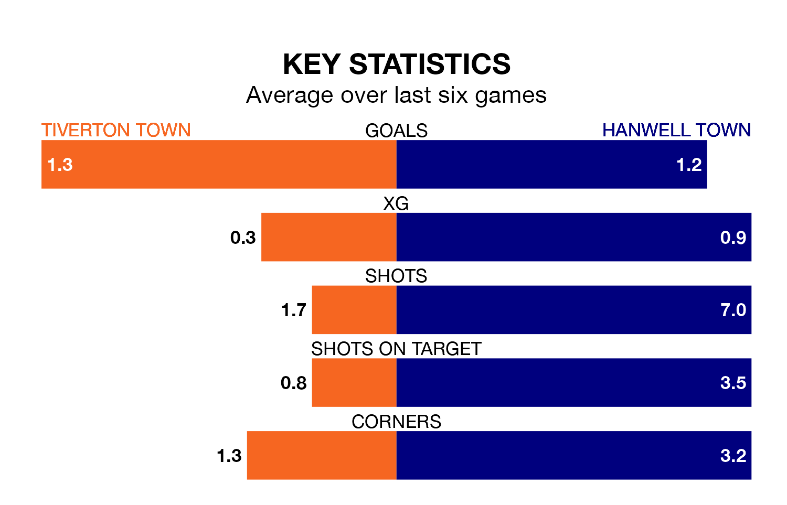

Struggling Tiverton Town face Hanwell Town at Ladysmead on Saturday looking to build on a win in their last league outing.
After securing all three points with a 2-1 victory over Hungerford Town on March 16, Tiverton sit 20th in the Southern League Premier South.
They travel to play a Hanwell side 15th in the standings, who lost in their last match, 2-1 against Bracknell Town.
Tiverton are in bad form in the Southern League Premier South, with one win and a draw from their last six games.
With a win and three draws over that period, Hanwell's form is slightly better – they have taken six points from 18, compared to Tiverton Town's four.
With 50 goals in 32 games so far this season, the hosts are scoring at below the league average rate with 1.6 goals per game. And they are conceding more than average, letting in 63 goals at a rate of 2.0 per game.
Hanwell Town are also below average scorers, with 1.6 goals per game, compared to a league average of 1.7. They have conceded 1.8 goals per game.
In the last three years, Tiverton and Hanwell have played each other on three occasions. Tiverton won one of them and Hanwell the other.
Their last meeting was on November 25, when Tiverton won 2-1 away.
Updated: 10:19 (UTC), 22/03/24